Every cell has a voltage across its plasma membrane. Nerves and muscles use it to send signals, but so does every other cell: to move salt and water, to take up nutrients and to trigger secretion. Today: the proteins that make and use this voltage, the ion channels.
After this lecture you can:
explain how a channel differs from a transporter (rate, selectivity, gating);
explain why the K⁺ channel lets K⁺ through but not the smaller Na⁺;
describe the three main ways a channel opens: voltage, ligand, mechanical force;
derive the Nernst equation from ΔG and use it to calculate an equilibrium potential;
explain how the resting membrane potential arises, and what happens in an action potential;
explain how patch clamp records one channel, and how channel defects and channel drugs act (cystic fibrosis, local anaesthetics).
ELO 2 (membranes and transport), with a disease example for ELO 9.
The question: every cell is a small battery
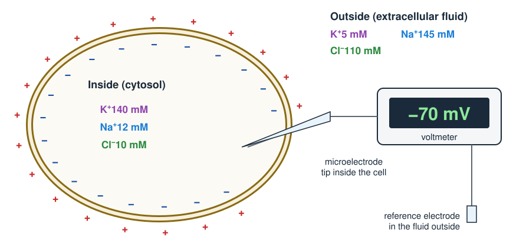
Put a fine electrode into almost any animal cell: the inside is about 70 mV more negative than the outside.
The membrane is only 5 nm thick, so the electric field across it is huge: about 14 million volts per metre.
Where does the voltage come from? How can a protein pore pass K⁺ but not the smaller Na⁺? And why does a child with cystic fibrosis taste salty?
Channels and transporters: two ways across
Recap: the bilayer stops ions; the Na⁺/K⁺ pump uses ATP to keep K⁺ high inside and Na⁺ high outside.
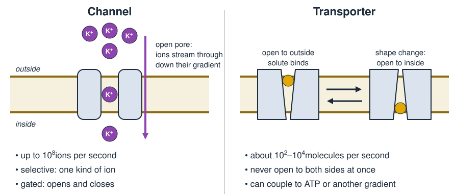
A channel is fast because nothing has to change shape for each ion. It can only let ions flow down their electrochemical gradient: passive transport.
How do we know? The structure of a K⁺ channel
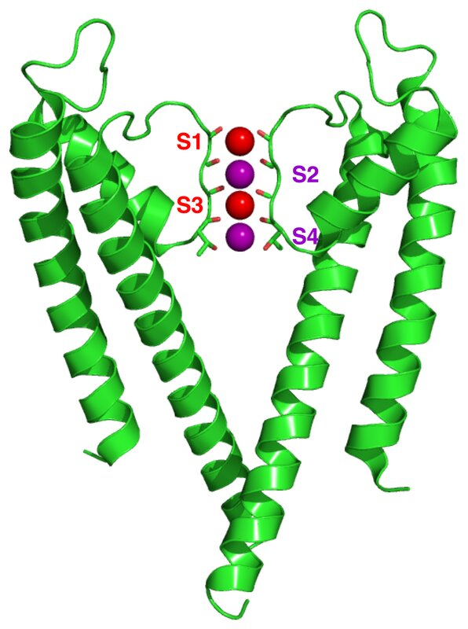
KcsA, a bacterial K⁺ channel (PDB 1K4C). Two of the four subunits are shown. K⁺ ions (purple) and water (red) sit in the selectivity filter, sites S1–S4.
1998: Roderick MacKinnon’s group solved the first atomic structure of an ion channel by X-ray crystallography: KcsA from the bacterium Streptomyces.
Four identical subunits form a ring around a central pore, like the staves of a barrel.
Most of the pore is wide and lined with water. Only a short part near the outside, the selectivity filter (about 1.2 nm long), is narrow.
The filter is lined by backbone carbonyl oxygens (C=O) of the sequence TVGYG, the same in K⁺ channels from bacteria to humans.
Nobel Prize in Chemistry 2003 (MacKinnon, with Peter Agre for water channels).
The selectivity filter: why K⁺ passes and Na⁺ does not
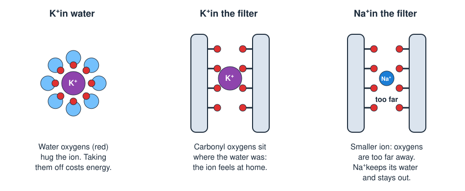
In water, every ion is wrapped in a shell of water molecules. To enter the narrow filter, the ion must lose its water, which costs energy.
For K⁺ (radius 0.13 nm), the filter’s carbonyl oxygens sit exactly where the water oxygens were: the energy is paid back.
Na⁺ is smaller (0.10 nm). The rigid filter cannot close in on it, so losing water is not paid back. Na⁺ stays out: about 1 in 10 000 ions that pass is Na⁺.
Gating: three ways to open a channel
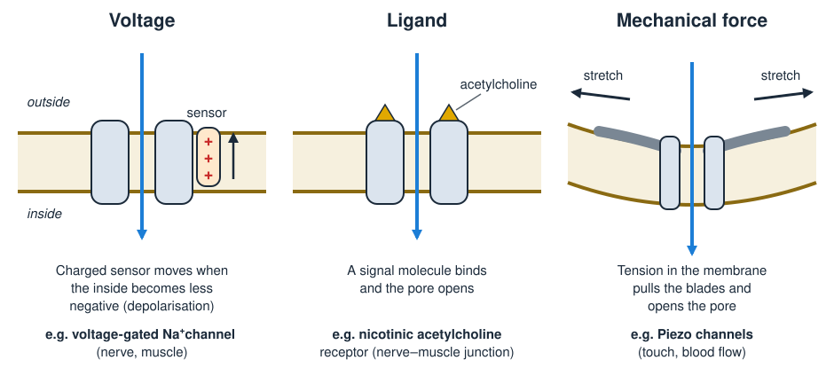
Voltage-gated: positive charges in a voltage-sensor helix are pulled by the membrane field. When the inside becomes less negative, the sensor moves and opens the gate.
Ligand-gated: a molecule binds and opens the pore. Two acetylcholine molecules open the receptor on a muscle cell; Na⁺ flows in.
Mechanically gated: tension in the membrane opens Piezo, a large three-bladed channel (Nobel Prize 2021, Patapoutian). Piezo2 lets you feel touch.
Two forces on an ion: the electrochemical gradient
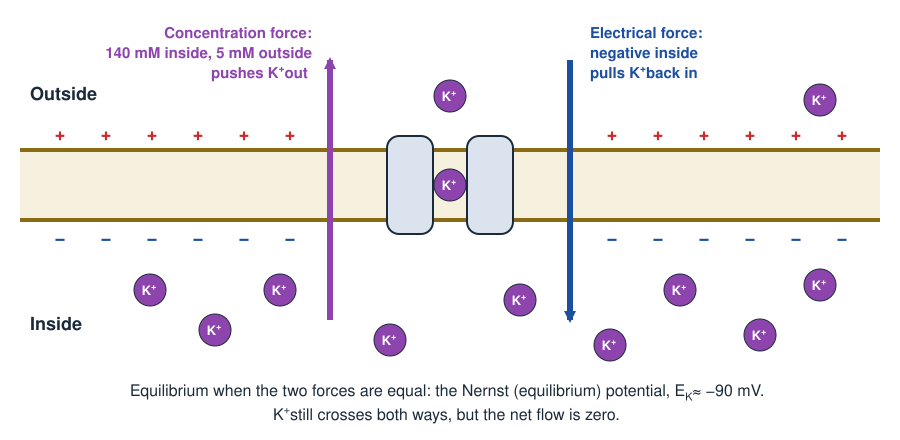
Concentration: more K⁺ inside than outside pushes K⁺ out.
Voltage: a negative inside pulls positive ions in (and pushes negative ions out).
Together they make the electrochemical gradient. The ion flows until the two forces are equal: the equilibrium potential of that ion.
The Nernst equation from ΔG
You know \Delta G = \Delta G^\circ + RT\ln Q. Move 1 mol of ion from outside to inside:
Same ion on both sides, so \Delta G^\circ = 0 and Q = c_\text{in}/c_\text{out}. Chemical part: \;RT \ln \dfrac{c_\text{in}}{c_\text{out}}
Moving charge z across the membrane potential V = V_\text{in} - V_\text{out} adds electrical work: \;zFV
Total: \quad \Delta G = RT \ln \dfrac{c_\text{in}}{c_\text{out}} + zFV
R = 8.314 J mol⁻¹ K⁻¹, T = 310 K (37 °C), F = 96 485 C mol⁻¹, so RT/F \approx26.7 mV. In base-10 logarithm: E \approx \dfrac{61.5\text{ mV}}{z}\,\log_{10}\dfrac{c_\text{out}}{c_\text{in}}: 61.5 mV per tenfold gradient for a +1 ion.
Nernst with numbers
Ion
Inside (mM)
Outside (mM)
E = \dfrac{26.7\text{ mV}}{z}\ln\dfrac{c_\text{out}}{c_\text{in}}
E_\text{K} ≈ −89 mV: K⁺ would stop flowing out when the inside is 89 mV negative.
E_\text{Na} ≈ +67 mV: Na⁺ would keep flowing in until the inside is 67 mV positive.
The resting cell (−70 mV) is close to E_\text{K} and far from E_\text{Na}. So at rest K⁺ leaks out slowly, and Na⁺ is pulled in strongly whenever a Na⁺ channel opens.
Typical mammalian values; concentrations differ between cell types.
How the resting potential arises
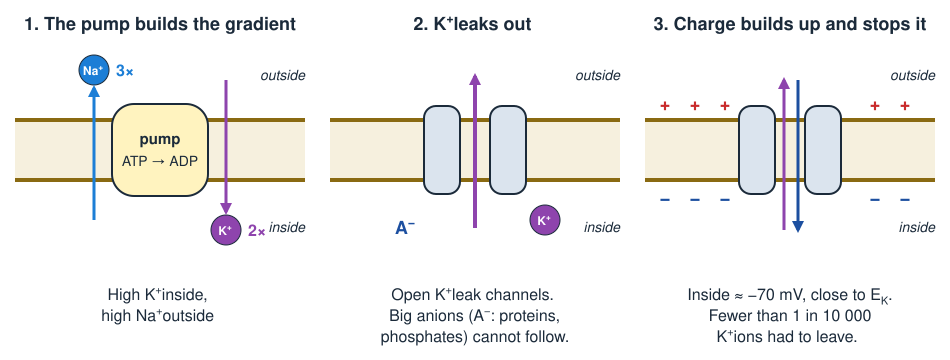
Pump: the Na⁺/K⁺ pump (3 Na⁺ out, 2 K⁺ in per ATP) builds and keeps the gradients.
Leak: the resting membrane has many open K⁺ leak channels, few open Na⁺ channels. K⁺ leaves; the large negative molecules inside cannot follow.
Charge: the thin layer of extra charge at the membrane is the membrane potential. Concentrations hardly change.
The voltage follows the most open channels
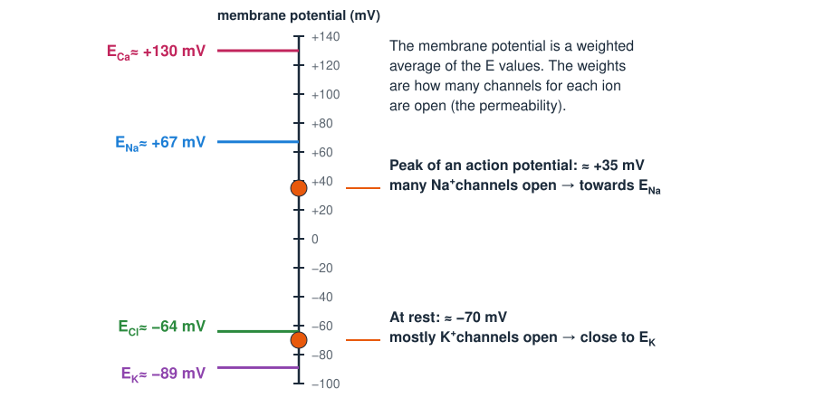
At rest the membrane is mostly permeable to K⁺, so the resting potential (about −70 mV) lies close to E_\text{K}, pulled a little towards E_\text{Na} by a small Na⁺ leak.
This weighted average is the Goldman equation. Learn the idea, not the formula: more open channels for an ion = voltage closer to that ion’s E.
Open many Na⁺ channels, and the voltage swings towards E_\text{Na}. That is the action potential.
Change the K⁺ outside, and the resting potential changes: high blood K⁺ is dangerous for the heart.
The action potential in one slide
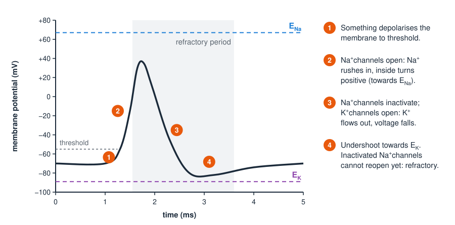
An all-or-none spike of about 1 ms: voltage-gated Na⁺ in, then voltage-gated K⁺ out. Na⁺ channel inactivation makes a short refractory period, so the signal only travels forwards along an axon. Only a tiny number of ions move; the pump restores the gradients later.
How do we know? Patch clamp
A glass pipette (left, blue-grey) sealed onto a neuron in a brain slice (hippocampus), seen by DIC microscopy.
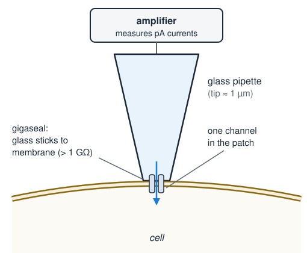
Press a polished glass pipette onto a cell and apply gentle suction. The glass seals to the membrane so tightly (gigaseal) that the only current is through channels in the patch under the tip.
Cell-attached recording: the cell stays intact; you measure currents of a few picoamperes.
Watching one protein open and close
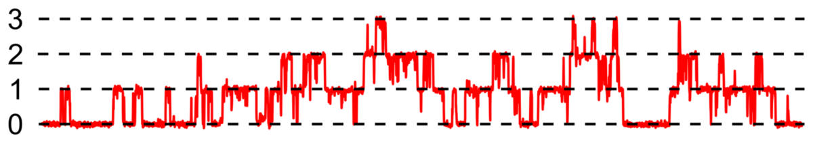
Single-channel recording (inside-out patch) of BK channels, a Ca²⁺-activated K⁺ channel. Dashed lines: 0, 1, 2 or 3 channels open. Each step is the current through one channel.
The current jumps in square steps: a channel is either fully open or closed. No half-open state.
One step of 2 pA = 2 × 10⁻¹² C/s ÷ 1.6 × 10⁻¹⁹ C ≈ 12 million ions per second through one protein.
Open times are random, milliseconds long. Gating signals change the probability of being open, not the size of the step.
Channels in non-excitable cells: CFTR moves salt and water
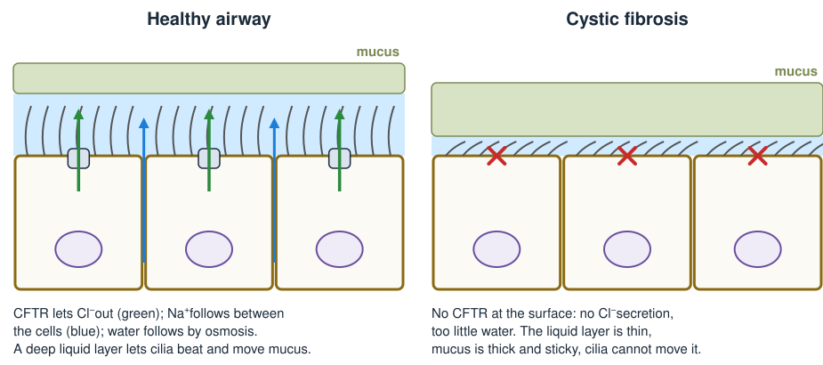
CFTR is a Cl⁻ channel in the apical (top) membrane of epithelia: airways, gut, pancreas, sweat glands. It opens when phosphorylated by protein kinase A and when it binds ATP.
Cells cannot pump water. They secrete salt (Cl⁻ through CFTR, Na⁺ between the cells), and water follows by osmosis. This keeps the airway surface wet, so cilia can clear mucus.
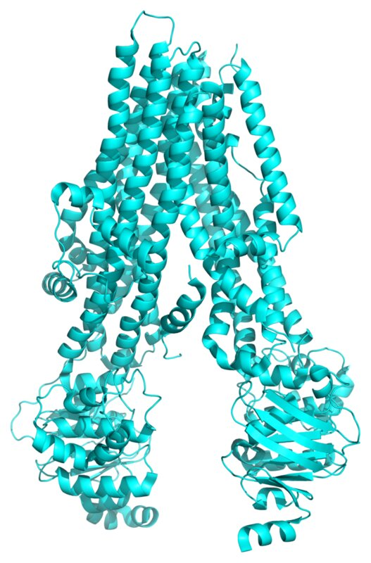
Human CFTR, cryo-EM (PDB 5UAK).
Ca²⁺ channels: making a signal
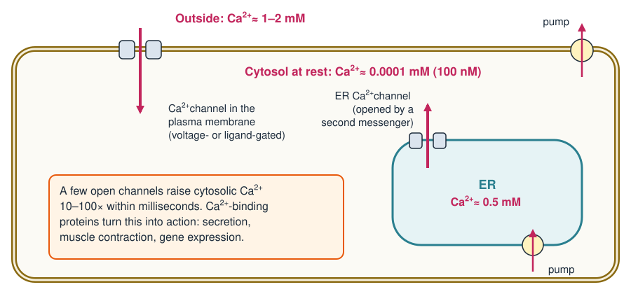
Pumps keep cytosolic Ca²⁺ 10 000 times lower than outside and in the ER. Opening a few Ca²⁺ channels therefore makes a large, fast rise.
Ca²⁺ binds proteins that change shape and act: neurotransmitter release, muscle contraction, insulin secretion, gene expression.
Channels in the plasma membrane (voltage- or ligand-gated) and in the ER membrane (opened by second messengers). More in the signalling lectures.
Why it matters: cystic fibrosis and drugs matched to the defect
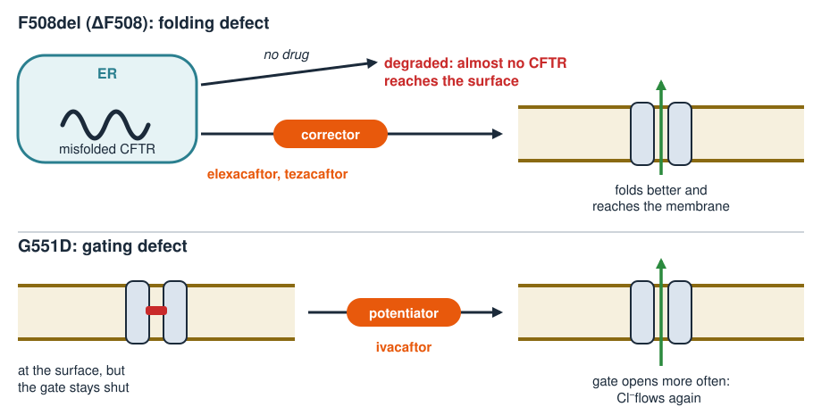
Cystic fibrosis: both copies of the CFTR gene mutated. Thick mucus, lung infections, blocked pancreas.
F508del: one amino acid missing; CFTR misfolds in the ER and is degraded (the ER lecture). Carried by about 9 in 10 patients.
G551D: CFTR reaches the surface, but the gate does not open.
Elexacaftor/tezacaftor/ivacaftor (one combination, approved 2019): two correctors plus a potentiator. Lung function improves markedly.
Why it matters: salty sweat, and blocking Na⁺ channels
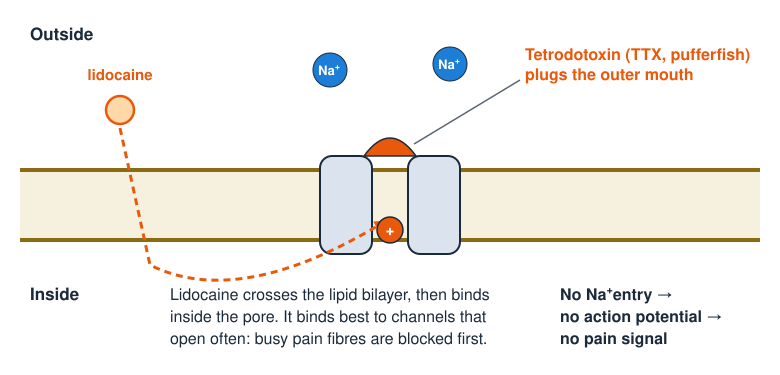
Lidocaine (local anaesthetic, dentist) crosses the membrane, then blocks the Na⁺ channel pore from inside. No action potentials in pain fibres.
Tetrodotoxin from pufferfish plugs the outer mouth. It blocks all nerve signals: deadly.
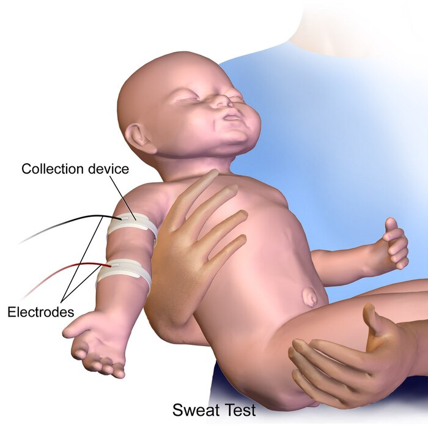
Sweat test: Cl⁻ in sweat ≥ 60 mmol/L means cystic fibrosis.
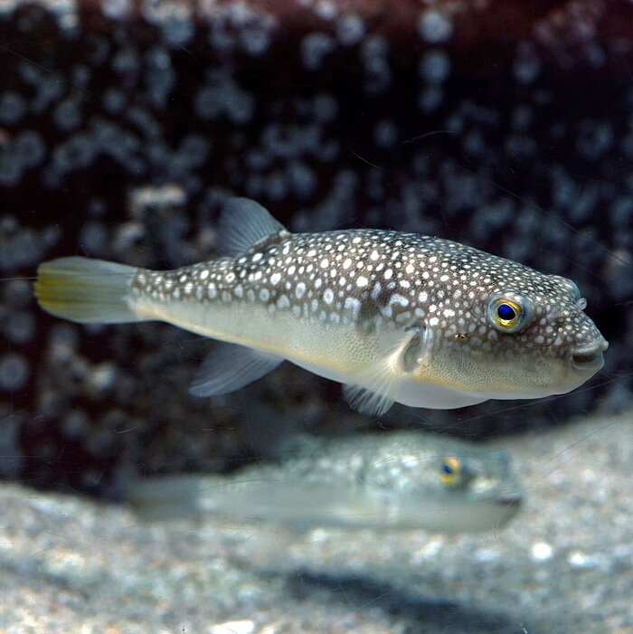
Pufferfish (Takifugu). Its toxin is made by bacteria.
Summary
Channels are open pores: fast (up to 10⁸ ions/s), selective and gated (voltage, ligand, mechanical force). Transporters are slower but can pump.
The K⁺ channel filter selects K⁺ over the smaller Na⁺ because its carbonyl oxygens replace the water shell of K⁺ exactly, but not of Na⁺.
Each ion has an equilibrium potential from \Delta G = RT\ln(c_\text{in}/c_\text{out}) + zFV = 0: the Nernst equation. E_\text{K} ≈ −89 mV, E_\text{Na} ≈ +67 mV.
The resting potential (≈ −70 mV) comes from the pump’s gradients plus open K⁺ leak channels, so it lies near E_\text{K}. Opening Na⁺ channels gives the action potential. Patch clamp shows single channels opening and closing.
Channels work in all cells: CFTR drives salt and water secretion, Ca²⁺ channels make signals. Drugs match the defect: CFTR correctors and potentiators, lidocaine on Na⁺ channels.
Read more (optional): Alberts et al., Molecular Biology of the Cell, 7th ed., ch. 11.